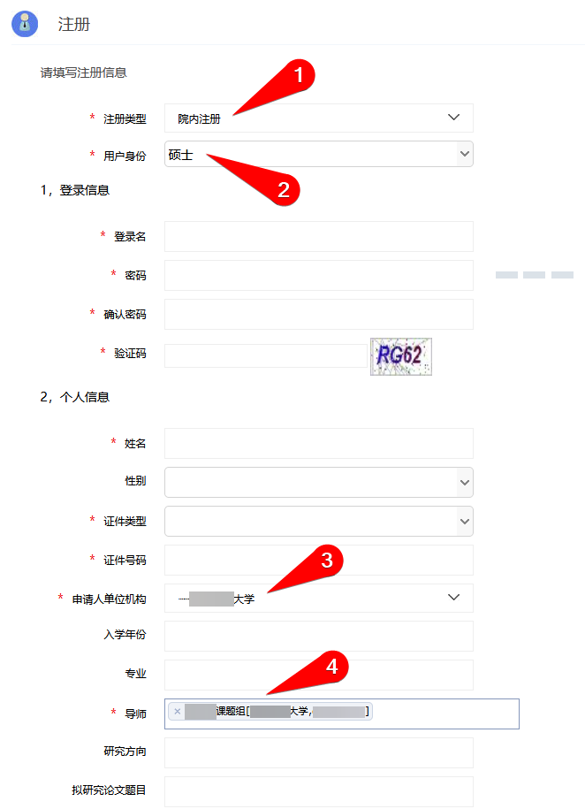

注册西南医院仪器共享平台
- 浏览器访问西南医院仪器共享平台，西南医院内网
- 右上角注册你的平台帐号。

- 注意均选择院内注册。不对院外注册提供服务。
单位机构处，西南医院内选择具体科室，学校和其他附属医院只有单位整体一项可选。
由于系统脱离互联网，找回密码功能已不可用，请不要忘记密码。

- 注意导师课题组在本平台没有账号的，需要先以导师名义注册。因为学生账号费用只能挂靠到课题组名下，没有导师帐号无法直接建学生账号。（不知道有没有的话我可以在系统里查询）
有导师帐号后，如果导师同意，学生也可以直接用导师帐号。但建议让学生自建账号，可以管理不同学生的花费。 - 这样注册账号后暂时只有游客访问权限，需要进一步开通预约设备权限。